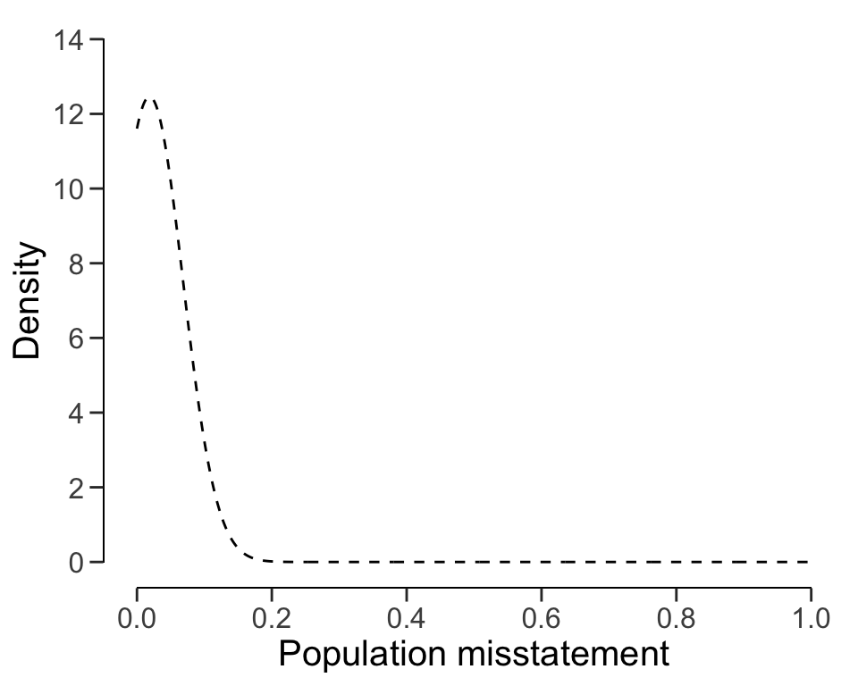

plan <- planning(materiality = 0.03, expected = 0, conf.level = 0.95, likelihood = "hypergeometric", N.units = 1000)
plan
#>
#> Classical Audit Sample Planning
#>
#> minimum sample size = 94
#> sample size obtained in 95 iterations via method 'hypergeometric'4 Planning
One of the key considerations in audit sampling is determining the appropriate sample size to reduce the sampling risk to an appropriately low level, while minimizing audit effort. To quantify the sampling risk, it is necessary to specify the statistical model that connects the data to the population misstatement, referred to as the likelihood. This chapter will delve into three standard likelihoods commonly employed in audit sampling: the hypergeometric likelihood, the binomial likelihood, and the Poisson likelihood.
Note that planning is a game of optimization that could be avoided. If you are using the Bayesian approach to audit sampling, it is not required to plan a specific sample size in advance (Derks et al., 2022b). That is because in Bayesian inference, the posterior distribution after seeing each item is used as the prior distribution for the next item. That means that you can simply start sampling and monitor the evidence in the data over time. However, to get an idea of how many samples are required to reduce the sampling risk to an level, planning a sample using a Bayesian approach can still be good practice.
4.1 Required Information
First, planning a minimum sample requires knowledge of the conditions that lead to acceptance or rejection of the population (i.e., the sampling objectives). Typically, sampling objectives can be classified into one or both of the following:
- Hypothesis testing: The goal of the sample is to obtain evidence for or against the claim that the misstatement in the population is lower than a given value (i.e., the performance materiality).
- Estimation: The goal of the sample is to obtain an accurate estimate of the misstatement in the population with a certain precision.
Second, it is advised to specify the expected (or tolerable) misstatements in the sample. The expected misstatements are the misstatements that you allow in the sample, while still retaining the desired amount of assurance about the population. It is strongly recommended to set the value for the expected misstatements in the sample conservatively to minimize the chance of the observed misstatements in the sample exceeding the expected misstatements, which would imply that insufficient work has been done in the end to reduce the sampling risk to an appropriately low level.
Finally, next to determining the sampling objective(s) and the expected misstatements, it is important to determine the statistical distribution linking the sample outcomes to the population misstatement. This distribution is called the likelihood (i.e., poisson, binomial, or hypergeometric). All three aforementioned likelihoods are commonly used in an audit sampling context, however, poisson is the default likelihood in jfa because it is the most conservative of the three. In the subsections below, we elaborate on the three standard likelihoods for audit sampling and demonstrate how they can be used to obtain a minimum sample size.
In jfa, determining an appropriate sample size is achieved via the planning() function.

4.2 The Hypergeometric Likelihood
The hypergeometric distribution is a discrete probability distribution that is commonly used to model the number of events occurring in a fixed number of trials when the population size is known. It assumes that samples are drawn from the population without replacement, and is therefore the likelihood that most closely resembles the audit practice. For our purpose, we can use the hypergeometric distribution as a likelihood to model the number of misstatements that are expected to be found in the sample.
The probability mass function (PMF) of the hypergeometric distribution is given by:
\[\begin{equation} p(X = k) = \frac{\binom{K}{k} \binom{N-K}{n-k}}{\binom{N}{n}}, \end{equation}\]
where \(k\) is the number of misstatements in the sample, \(n\) is the sample size, \(N\) is the population size and \(K\) is the total number of misstatements assumed in the population. The assumed misstatements \(K\) is a whole number, that is, a linear extrapolation of the maximum tolerable misstatement rate (i.e., the performance materiality) \(\theta_{max}\) to the total population of size \(N\). In the equation below, \(\lceil...\rceil\) is the ceiling function, which means that \(\lceil1.2\rceil = 2\).
\[\begin{equation} K = \lceil \theta_{max} N \rceil. \end{equation}\]
Let’s consider how to use the hypergeometric likelihood to calculate the minimum sample size needed to reduce the sampling risk to an appropriately low level.
4.2.1 Classical planning
In classical planning using the hypergeometric likelihood, the following statistical model is specified:
\[\begin{equation} k \sim \text{Hypergeometric}(n, N, K) \end{equation}\]
Given the performance materiality \(\theta_{max}\), we can compute \(K\) and solve for the minimum sample size \(n\) needed to reduce the sampling risk to an appropriately low level. This sample size is also dependent on the number of misstatements that the auditor expects, or tolerates, in the sample.
4.2.1.1 No Expected Misstatements
If the auditor does not expect any misstatements in the sample, they can set \(k = 0\), which consequently determines how the sample size can be calculated. For example, if we want to achieve an assurance level of 95 percent (\(\alpha = 0.05\)) for a performance materiality of \(\theta_{max} = 0.03\) in a population of \(N = 1000\) items, then \(K = \lceil 0.03 \cdot 1000 \rceil = 30\) and the minimum sample size under the assumption of no expected misstatements in the sample is \(n = 94\).
The sample size of 94 can be confirmed by checking that 94 is the minimum integer that results in less than 5 percent probability of finding 0 misstatements, given the assumption that the population misstatement is truly 3 percent. The dhyper() function calculates the probability of observing \(k\) missatements in a sample of \(n\) items given the assumed hypergeometric distribution with \(N\) items and \(K\) assumed misstatements in the population. By calculating this probability for \(n = 93\), we can show that this sample size is insufficient as the relevant probability is higher than the sampling risk \(\alpha\).
However, for \(n = 94\) the relevant probability is lower than the sampling risk \(\alpha\) and thus the sample size is considered to be sufficient.
dhyper(x = 0, m = K, n = 1000 - K, k = 94) < 0.05
#> [1] TRUEWe can make this sample size visually intuitive by showing the hypergeometric(\(k\) | 94, 1000, 30) distribution and highlighting the probability for \(k = 0\), see Figure 4.2. This probability is lower than the required sampling risk \(\alpha = 0.05\).
plot(plan)
The planning() function has two additional arguments that are not shown in the call above: by and max. The argument by sets the increment between possible sample sizes for consideration. For example, by = 5 considers only samples of size 10, 20, 30, etc:
planning(materiality = 0.03, expected = 0, conf.level = 0.95, likelihood = "hypergeometric", N.units = 1000, by = 10)
#>
#> Classical Audit Sample Planning
#>
#> minimum sample size = 100
#> sample size obtained in 11 iterations via method 'hypergeometric'The argument max sets the sample size at which the algorithm terminates. This can be used to avoid too many iterations of the algorithm at very low values of the performance materiality. For instance, max = 50 throws an error if more than 100 samples are required.
planning(materiality = 0.03, expected = 0, conf.level = 0.95, likelihood = "hypergeometric", N.units = 1000, max = 50)
#> Error in planning(materiality = 0.03, expected = 0, conf.level = 0.95, : the sample size is larger than 'max'4.2.1.2 Expected Misstatements
If the auditor expects misstatements in the sample, they can set \(k\) to any integer value, which consequently determines how the sample size can be calculated. As another example, if we want to achieve an assurance level of 95 percent (\(\alpha = 0.05\)) for a performance materiality of \(\theta_{max} = 0.03\) in a population of \(N = 1000\) items, then the required sample size under the assumption of one expected misstatement in the sample is \(n = 147\).
plan <- planning(materiality = 0.03, expected = 1, conf.level = 0.95, likelihood = "hypergeometric", N.units = 1000)
plan
#>
#> Classical Audit Sample Planning
#>
#> minimum sample size = 147
#> sample size obtained in 146 iterations via method 'hypergeometric'Once again, the sample size of 147 can be confirmed by checking that 147 is the minimum integer that results in less than 5 percent probability of finding 0 or 1 misstatements, given the assumption that that the population misstatement is truly 3 percent. By calculating this probability for \(n = 146\), we can show that this sample size is insufficient as the relevant probability is higher than the sampling risk \(\alpha\).
However, for \(n = 147\) the relevant probability is lower than the sampling risk \(\alpha\) and thus the sample size is considered to be sufficient.
Like before, we can make this sample size visually intuitive by showing the hypergeometric(\(k\) | 147, 1000, 30) distribution and highlighting the probabilities for \(k = 0\) and \(k = 1\), see Figure 4.3. The sum of these probabilities is lower than the required sampling risk \(\alpha = 0.05\).
plot(plan)
4.2.2 Bayesian Planning
Performing Bayesian planning with the hypergeometric likelihood (Dyer & Pierce, 1993) requires that you specify a prior distribution for the total misstatements \(K\). Practically, this means that you should provide an input for the prior argument in the planning() function.
Setting prior = TRUE performs Bayesian planning using a default prior conjugate to the specified likelihood (i.e., a beta-binomial prior). Because this is a Bayesian analysis, the following statistical model is specified:
\[\begin{align} k &\sim \text{Hypergeometric}(n, N, K) \\ K &\sim \text{Beta-binomial}(N, \alpha, \beta) \end{align}\]
The beta-binomial prior distribution is the conjugate prior for to the hypergeometric likelihood (see this list of conjugate priors), which means that the posterior distribution of \(K\) can be determined analytically. For example, if the prior distribution for \(K\) is:
\[\begin{equation} K \sim \text{Beta-binomial}(N, \alpha, \beta) \,\,\,\,\,\,\,\,\,\, K = 0, \ldots, N \end{equation}\]
and the auditor has observed a sample of \(n\) items containing \(k\) misstatements, then the posterior distribution for \(K\) is:
\[\begin{equation} K \sim \text{Beta-binomial}(N - n, \alpha + k, \beta + k - n) \,\,\,\,\,\,\,\,\,\, K = k, k + 1, \ldots, N - n + k. \end{equation}\]
4.2.2.1 No Expected Misstatements
Planning for no expected misstatements in the sample can be done by setting the value for the expected argument to zero. If we want to achieve an assurance level of 95 percent (\(\alpha = 0.05\)) for a performance materiality of \(\theta_{max} = 0.1\) in a population of \(N = 20\) items, then the required sample size under the assumption of zero expected misstatements in the sample is \(n = 15\). The command below uses a default beta-binomial(\(N\), 1, 1) prior distribution to plan this sample, since planning() is given the hypergeometric likelihood.
plan <- planning(materiality = 0.1, expected = 0, conf.level = 0.95, likelihood = "hypergeometric", N.units = 20, prior = TRUE)The summary() function can be used to obatain relevant information about the planning.
summary(plan)
#>
#> Bayesian Audit Sample Planning Summary
#>
#> Options:
#> Confidence level: 0.95
#> Population size: 20
#> Materiality: 0.1
#> Hypotheses: H₀: Θ > 0.1 vs. H₁: Θ < 0.1
#> Expected: 0
#> Likelihood: hypergeometric
#> Prior distribution: beta-binomial(N = 20, α = 1, β = 1)
#>
#> Results:
#> Minimum sample size: 15
#> Tolerable errors: 0
#> Posterior distribution: beta-binomial(N = 5, α = 1, β = 16)
#> Expected most likely error: 0
#> Expected upper bound: 0.05
#> Expected precision: 0.05
#> Expected BF₁₀: 190You can inspect how the prior distribution compares to the expected posterior distribution by using the plot() function, see Figure 4.4. The expected posterior distribution is the posterior distribution that would occur if you actually observed the planned sample containing the expected misstatements. Note that the posterior distribution is only defined in the range [\(k\); \(N - n + k\)], since a part of the population has already been seen.
plot(plan)
4.2.2.2 Expected Misstatements
Planning for expected misstatements in the sample can be done by setting the value for the expected argument to a different value than zero. For example, the code below calculates the minimum sample size to achieve an assurance level of 95 percent (\(\alpha = 0.05\)) for a performance materiality of \(\theta_{max} = 0.1\) in a population of \(N = 50\) items, given one expected misstatement in the sample. This sample size is \(n = 32\).
plan <- planning(materiality = 0.1, expected = 1, conf.level = 0.95, likelihood = "hypergeometric", N.units = 50, prior = TRUE)
plan
#>
#> Bayesian Audit Sample Planning
#>
#> minimum sample size = 32
#> sample size obtained in 31 iterations via method 'hypergeometric' + 'prior'Like before, you can inspect how the prior distribution compares to the expected posterior distribution by using the plot() function, see Figure 4.5 below for the output of this call.
plot(plan)4.3 The Binomial Likelihood
The binomial distribution is a discrete probability distribution that is commonly used to model the number of events occurring in a fixed number of trials. It is similar to the hypergeometric distribution, however, it assumes that samples are drawn from the population with replacement. For our purpose, we can use the binomial distribution as a likelihood to model the number of misstatements that are expected to be found in the sample.
In audit sampling, the binomial likelihood is often used to approximate the hypergeometric likelihood since it is easier to work with (i.e., it only has two parameters: \(\theta\) and \(n\), while the hypergeometric has three: \(n\), \(N\), and \(K\)). However, the binomial likelihood is more conservative than the hypergeometric likelihood, meaning that resulting sample sizes will be higher.
The probability mass function (PMF) of the binomial distribution is given by:
\[\begin{equation} p(k; n, \theta) = \binom{n}{k} \theta^{k} (1-\theta)^{n - k}, \end{equation}\]
where \(k\) is the number of misstatements in the sample, \(n\) is the sample size and \(\theta\) is the probability of misstatement in the population. Let’s consider how to use the binomial likelihood to calculate the minimum sample size needed to reduce the sampling risk to an appropriately low level.
4.3.1 Classical Planning
In classical planning using the binomial likelihood, the following statistical model is specified:
\[\begin{equation} k \sim \text{Binomial}(n, \theta_{max}) \end{equation}\]
4.3.1.1 No Expected Misstatements
If the auditor does not expect any misstatements in the sample, they can set \(k = 0\), which consequently determines how the sample size can be calculated. Given a performance materiality \(\theta_{max}\), we can solve for the minimum sample size \(n\) needed to reduce the sampling risk to an appropriately low level. A useful trick to utilize is that, if we do not expect any misstatements in the sample, the formula for the minimum required sample size reduces to:
\[\begin{equation} n = \lceil\frac{\ln(\alpha)}{\ln(1 - \theta_{max})}\rceil. \end{equation}\]
For example, if we want to achieve an assurance level of 95 percent (\(\alpha=0.05\)) for a performance materiality of \(\theta_{max} = 0.03\), then the required sample size under the assumption of zero expected misstatements in the sample is \(n = 99\).
In jfa, this sample size can be replicated using the following code:
plan <- planning(materiality = 0.03, expected = 0, conf.level = 0.95, likelihood = "binomial")
plan
#>
#> Classical Audit Sample Planning
#>
#> minimum sample size = 99
#> sample size obtained in 100 iterations via method 'binomial'The sample size of 99 can be confirmed by checking that 99 is the minimum integer that results in less than 5 percent probability of finding 0 misstatements, given the assumption that the population misstatement is truly 3 percent. The dbinom() function calculates the probability of observing \(k\) missatements in a sample of \(n\) items given an assumed misstatement probability \(\theta_{max}\). By calculating this probability for \(n = 98\), we can show that this sample size is insufficient as the relevant probability is higher than the sampling risk \(\alpha\).
dbinom(x = 0, size = 98, prob = 0.03) < 0.05
#> [1] FALSEHowever, for \(n = 99\) the relevant probability is lower than the sampling risk \(\alpha\) and thus the sample size is considered to be sufficient.
dbinom(x = 0, size = 99, prob = 0.03) < 0.05
#> [1] TRUEWe can make this sample size visually intuitive by showing the binomial(\(k\) | 99, 0.03) distribution and highlighting the probability for \(k = 0\), see Figure 4.6. This probability is lower than the required sampling risk \(\alpha = 0.05\).
plot(plan)
4.3.1.2 Expected Misstatementss
However, if the number of expected misstatements in the sample is non-zero, it becomes more difficult to solve the formula for \(n\). Hence, they will need to set \(k\) to a different integer value, which consequently determines how the sample size is calculated. Here, we can iteratively try every value of \(n\) and return the smallest integer that satisfies the sampling objectives.
In jfa, this can be done by adjusting the expected argument in the planning() function. For example, if we want to achieve an assurance level of 95 percent (\(\alpha = 0.05\)) for a performance materiality of \(\theta_{max} = 0.03\), then the required sample size under the assumption of one expected misstatement in the sample is \(n = 157\).
plan <- planning(materiality = 0.03, expected = 1, conf.level = 0.95, likelihood = "binomial")Once again, the sample size of 157 can be confirmed by checking that 157 is the minimum integer that results in less than 5 percent probability of finding 0 or 1 misstatements, given the assumption that the population misstatement is truly 3 percent. By calculating this probability for \(n = 156\), we can show that this sample size is insufficient as the relevant probability is higher than the sampling risk \(\alpha\).
However, for \(n = 157\) the relevant probability is lower than the sampling risk \(\alpha\) and thus the sample size is considered to be sufficient.
Like before, we can make this sample size visually intuitive by showing the binomial(\(k\) | 157, 0.03) distribution and highlighting the probabilities for \(k = 0\) and \(k = 1\), see Figure 4.7. The sum of these probabilities is lower than the required sampling risk \(\alpha = 0.05\).
plot(plan)4.3.1.3 Expected Misstatement Rate
When the expected misstatement rate in the sample \(\theta_{exp}\) is assessed, the value for \(k\) can be determined as \(k = n\theta_{exp}\), which consequently determines how the sample size can be calculated.
To account for the fact that \(k\) can have non-integer values in this case, we can use a well-known similarity between the binomial distribution and the beta distribution to plan the sample size. The upper bound for any binomial(\(k\); \(n\), \(\theta\)) distributed variable can also be obtained via percentiles of the beta(\(1 + k\), \(n - k\)) distribution.
For example, the upper bound for a sample of \(n = 10\) items containing \(k = 2\) misstatements, when calculated via the traditional binom.test() is:
ub_binom <- binom.test(x = 2, n = 10, p = 0.03, conf.level = 0.95, alternative = "less")$conf.int[2]
ub_binom
#> [1] 0.5069013When calculated via the beta relationship, the upper bound is:
ub_beta <- qbeta(p = 0.95, shape1 = 1 + 2, shape2 = 10 - 2)
ub_beta
#> [1] 0.5069013It can be validated that the two approaches result in the same upper bound via:
ub_binom == ub_beta
#> [1] TRUEThis relationship between the binomial likelihood and the beta distribution is deliberately not used in jfa. That is because, in the case of the binomial distribution, the auditing standards round the tolerable misstatements upwards to a whole number. For example, if we try to call the planning() function with the argument expected = 1.5, jfa will internally convert this to expected = 2 and base the sample size on this in order to stay compliant with American Institute of Certified Public Accountants (AICPA) (2016). The resulting sample size is \(n = 208\) in this case.
planning(materiality = 0.03, expected = 1.5, conf.level = 0.95, likelihood = "binomial")
#> Using 'expected = 2' since 'expected' must be a single integer >= 0
#>
#> Classical Audit Sample Planning
#>
#> minimum sample size = 208
#> sample size obtained in 206 iterations via method 'binomial'4.3.2 Bayesian Planning
Performing Bayesian planning using the binomial likelihood requires that you specify a prior distribution for the parameter \(\theta\). Practically, this means that you should provide an input for the prior argument in the planning() function.
Setting prior = TRUE performs Bayesian planning using a default prior conjugate to the specified likelihood (i.e., a beta prior). Because this is a Bayesian analysis, the following statistical model is specified:
\[\begin{align} k &\sim \text{Binomial}(n, \theta) \\ \theta &\sim \text{Beta}(\alpha, \beta) \end{align}\]
The beta prior distribution is the conjugate prior for the binomial likelihood (see this list of conjugate priors), which means that the posterior distribution of \(\theta\) can be determined analytically. For example, if the prior distribution for \(\theta\) is:
\[\begin{equation} \theta \sim \text{Beta}(\alpha, \beta) \,\,\,\,\,\,\,\,\,\, \theta \in [0, 1] \end{equation}\]
and the auditor has observed a sample of \(n\) items containing \(k\) misstatements, then the posterior distribution for \(\theta\) is:
\[\begin{equation} \theta \sim \text{Beta}(\alpha + k, \beta + n - k) \,\,\,\,\,\,\,\,\,\, \theta \in [0, 1]. \end{equation}\]
For example, the command below uses a default beta(\(\alpha=1\), \(\beta=1\)) prior distribution to plan the sample, since planning() is given the binomial likelihood. If we want to achieve an assurance level of 95 percent (\(\alpha=0.05\)) for a performance materiality of \(\theta_{max} = 0.03\), then the required sample size under the assumption of zero expected misstatements in the sample is \(n = 98\).
plan <- planning(materiality = 0.03, expected = 0, conf.level = 0.95, likelihood = "binomial", prior = TRUE)The summary() function can be used to obatain relevant information about the planning.
summary(plan)
#>
#> Bayesian Audit Sample Planning Summary
#>
#> Options:
#> Confidence level: 0.95
#> Materiality: 0.03
#> Hypotheses: H₀: Θ > 0.03 vs. H₁: Θ < 0.03
#> Expected: 0
#> Likelihood: binomial
#> Prior distribution: beta(α = 1, β = 1)
#>
#> Results:
#> Minimum sample size: 98
#> Tolerable errors: 0
#> Posterior distribution: beta(α = 1, β = 99)
#> Expected most likely error: 0
#> Expected upper bound: 0.029807
#> Expected precision: 0.029807
#> Expected BF₁₀: 627.22You can inspect how the prior distribution compares to the expected posterior distribution by using the plot() function, see Figure 4.8. The expected posterior distribution is the posterior distribution that would occur if you actually observed the planned sample containing the expected misstatements.
plot(plan)
The input for the prior argument can also be an object created by the auditPrior function. If planning() receives a prior for which there is no conjugate likelihood available, it will numerically derive the posterior distribution. For example, the command below uses a Normal(0, 0.05) prior distribution to plan the sample using the binomial likelihood. Because this is a Bayesian analysis, the following statistical model is specified:
\[\begin{align} k &\sim \text{Binomial}(n, \theta) \\ \theta &\sim \text{Normal}(\mu = 0, \sigma = 0.05) \end{align}\]
prior <- auditPrior(method = "param", likelihood = "normal", alpha = 0, beta = 0.05)
plan <- planning(materiality = 0.03, expected = 0, conf.level = 0.95, likelihood = "poisson", prior = prior)The summary() function can be used to obatain relevant information about the planning.
summary(plan)
#>
#> Bayesian Audit Sample Planning Summary
#>
#> Options:
#> Confidence level: 0.95
#> Materiality: 0.03
#> Hypotheses: H₀: Θ > 0.03 vs. H₁: Θ < 0.03
#> Expected: 0
#> Likelihood: poisson
#> Prior distribution: normal(μ = 0, σ = 0.05)T[0,1]
#>
#> Results:
#> Minimum sample size: 91
#> Tolerable errors: 0
#> Posterior distribution: Nonparametric
#> Expected most likely error: 0
#> Expected upper bound: 0.029
#> Expected precision: 0.029
#> Expected BF₁₀: 26.749The resulting sample size under this prior is \(n = 90\), a reduction of 8 samples when compared to the default beta(1, 1) prior distribution. Figure 4.9 shows this prior and posterior distribution.
plot(plan)4.4 The Poisson Likelihood
The Poisson distribution is a discrete probability distribution that is commonly used to model the number of events occurring in a fixed time or space. We can use the Poisson distribution as a likelihood to model the number of misstatements that are expected to be found in the sample.
In audit sampling, the Poisson likelihood is often used to approximate the binomial likelihood since it is easier to work with (i.e., it only has one parameter: \(\lambda\), while the binomial has two parameters: \(\theta\) and \(n\)). However, the Poisson likelihood is more conservative than the binomial likelihood, meaning that resulting sample sizes will be higher.
The probability mass function (PMF) of the Poisson distribution is given by:
\[\begin{equation} p(k; \lambda) = \frac{\lambda^k e^{-\lambda}}{k!}, \end{equation}\]
where \(k\) is the number of misstatements in the sample, and \(\lambda\) is the average number of misstatements expected in the sample. The average number of misstatements is related to the misstatement rate in the population, denoted by \(\theta\), and the sample size, \(n\), by the following equation:
\[\begin{equation} \lambda = n \theta. \end{equation}\]
Let’s consider how to use the Poisson likelihood to calculate the minimum sample size needed to reduce the sampling risk to an appropriately low level.
4.4.1 Classical planning
In classical planning using the Poisson likelihood, the following statistical model is specified:
\[\begin{equation} k \sim \text{Poisson}(n \theta_{max}) \end{equation}\]
4.4.1.1 No Expected Misstatements
Given the performance materiality \(\theta_{max}\) and the Poisson likelihood, we can solve for the minimum sample size \(n\) needed to reduce the sampling risk to an appropriately low level. A useful trick to utilize is that, if we do not expect any misstatements in the sample, the formula for the required sample size reduces to:
\[\begin{equation} n = \lceil-\frac{\ln(\alpha)}{\theta_{max}}\rceil. \end{equation}\]
For example, if we want to achieve an assurance level of 95 percent (\(\alpha = 0.05\)) for a performance materiality of \(\theta_{max} = 0.03\), then the required sample size under the assumption of zero expected misstatements in the sample is \(n = 100\).
In jfa, this sample size can be replicated using the following code:
plan <- planning(materiality = 0.03, expected = 0, conf.level = 0.95, likelihood = "poisson")The sample size of 100 can be confirmed by checking that 100 is the minimum integer that results in less than 5 percent probability of finding 0 misstatements, given the assumption that the population misstatement is truly 3 percent. The dpois() function calculates the probability of observing \(k\) missatements in a sample of \(n\) items given an assumed misstatement probability \(\theta_{max}\). By calculating this probability for \(n = 99\), we can show that this sample size is insufficient as the relevant probability is higher than the sampling risk \(\alpha\).
dpois(x = 0, lambda = 99 * 0.03) < 0.05
#> [1] FALSEHowever, for \(n = 100\) the relevant probability is lower than the sampling risk \(\alpha\) and thus the sample size is considered to be sufficient.
dpois(x = 0, lambda = 100 * 0.03) < 0.05
#> [1] TRUEWe can make this visually intuitive by showing the Poisson(\(k\) | 100 \(\times\) 0.03) distribution and highlighting the probability for \(k = 0\), see Figure 4.10. This probability is lower than the required sampling risk \(\alpha = 0.05\).
plot(plan)4.4.1.2 Expected Misstatements
However, if the number of expected misstatements in the sample is non-zero, it becomes more difficult to solve the formula for \(n\) algebraically. Hence, they will need to set \(k\) to a different integer value. Next, we can iteratively try every value of \(n\) and return the smallest integer that satisfies the sampling objectives.
For example, if we want to achieve an assurance level of 95 percent (\(\alpha = 0.05\)) for a performance materiality of \(\theta_{max} = 0.03\), then the required sample size under the assumption of one expected misstatement in the sample is \(n = 159\).
plan <- planning(materiality = 0.03, expected = 1, conf.level = 0.95, likelihood = "poisson")Once again, the sample size of 159 can be confirmed by checking that 159 is the minimum integer that results in less than 5 percent probability of finding 0 or 1 misstatements, given the assumption that the population misstatement is truly 3 percent. By calculating this probability for \(n = 158\), we can show that this sample size is insufficient as the relevant probability is higher than the sampling risk \(\alpha\).
However, for \(n = 159\) the relevant probability is lower than the sampling risk \(\alpha\) and thus the sample size is considered to be sufficient.
Like before, we can make this visually intuitive by showing the Poisson(\(k\) | 159 \(\times\) 0.03) distribution and highlighting the probabilities for \(k = 0\) and \(k = 1\), see Figure 4.11. The sum of these probabilities is lower than the required sampling risk \(\alpha = 0.05\).
plot(plan)
4.4.1.3 Expected Misstatement Rate
When the expected misstatements in the sample \(\theta_{exp}\) is assessed, the value for \(k\) can be determined as \(k = n\theta_{exp}\), which consequently determines how the sample size can be calculated.
To account for the fact that \(k\) can have non-integer values in this case, we use a well-known similarity between the Poisson distribution and the gamma distribution to plan the sample size. The upper bound for any Poisson(\(k\); \(n \theta\)) distributed variable can also be obtained via percentiles of the gamma(\(1 + k\), \(n\)) distribution.
For example, the upper bound for a sample of \(n = 10\) items containing \(k = 2\) misstatements, when calculated via the traditional poisson.test() is:
ub_pois <- poisson.test(x = 2, T = 10, r = 0.03, conf.level = 0.95, alternative = "less")$conf.int[2]
ub_pois
#> [1] 0.6295794When calculated via the relationship with the gamma distribution, the upper bound is:
ub_gamma <- qgamma(p = 0.95, shape = 1 + 2, rate = 10)
ub_gamma
#> [1] 0.6295794It can be validated that the two approaches result in the same upper bound via:
ub_pois == ub_gamma
#> [1] TRUEThis relationship between the Poisson likelihood and the gamma distribution is used under the hood in jfa. For example, if we want to achieve an assurance level of 95 percent (\(\alpha = 0.05\)) for a performance materiality of \(\theta_{max} = 0.03\), then the required sample size under the assumption of 1.5 expected misstatements in the sample is \(n = 185\).
planning(materiality = 0.03, expected = 1.5, conf.level = 0.95, likelihood = "poisson")
#>
#> Classical Audit Sample Planning
#>
#> minimum sample size = 185
#> sample size obtained in 184 iterations via method 'poisson'The sample size of 185 can be confirmed by checking that 185 is the minimum integer that results in less than 5 percent probability of finding a misstatement rate in the population equal to, or higher than, 3 percent. By calculating this probability for \(n = 184\), we can show that this sample size is insufficient as the relevant upper bound is higher than the performance materiality \(\theta_{max}\).
qgamma(p = 0.95, shape = 1 + 1.5, rate = 184) < 0.03
#> [1] FALSEHowever, for \(n = 185\) the relevant upper bound is lower than the performance materiality \(\theta_{max}\) and thus the sample size is sufficient.
qgamma(p = 0.95, shape = 1 + 1.5, rate = 185) < 0.03
#> [1] TRUE4.4.2 Bayesian Planning
Performing Bayesian planning with the Poisson likelihood requires that you specify a prior distribution for the parameter \(\theta\). Practically, this means that you should provide an input for the prior argument in the planning() function.
Setting prior = TRUE performs Bayesian planning using a default prior conjugate to the specified likelihood (i.e., a gamma prior). Because this is a Bayesian analysis, the following statistical model is specified:
\[\begin{align} k &\sim \text{Poisson}(n\theta) \\ \theta &\sim \text{Gamma}(\alpha, \beta) \end{align}\]
The gamma prior distribution is the conjugate prior for the Poisson likelihood (see this list of conjugate priors), which means that the posterior distribution of \(\theta\) can be determined analytically. For example, if the prior distribution for \(\theta\) is:
\[\begin{equation} \theta \sim \text{Gamma}(\alpha, \beta) \,\,\,\,\,\,\,\,\,\, \theta \in [0, \infty] \end{equation}\]
and the auditor has observed a sample of \(n\) items containing \(k\) misstatements, then the posterior distribution for \(\theta\) is:
\[\begin{equation} \theta \sim \text{Gamma}(\alpha + k, \beta + n) \,\,\,\,\,\,\,\,\,\, \theta \in [0, \infty]. \end{equation}\]
For example, the command below uses a default gamma(\(\alpha=1\), \(\beta=1\)) prior distribution to plan the sample, since planning() is given the Poisson likelihood. If we want to achieve an assurance level of 95 percent (\(\alpha=0.05\)) for a performance materiality of \(\theta_{max} = 0.03\), then the required sample size under the assumption of zero expected misstatements in the sample is \(n = 99\).
plan <- planning(materiality = 0.03, expected = 0, conf.level = 0.95, likelihood = "poisson", prior = TRUE)The summary() function can be used to obatain relevant information about the planning.
summary(plan)
#>
#> Bayesian Audit Sample Planning Summary
#>
#> Options:
#> Confidence level: 0.95
#> Materiality: 0.03
#> Hypotheses: H₀: Θ > 0.03 vs. H₁: Θ < 0.03
#> Expected: 0
#> Likelihood: poisson
#> Prior distribution: gamma(α = 1, β = 1)
#>
#> Results:
#> Minimum sample size: 99
#> Tolerable errors: 0
#> Posterior distribution: gamma(α = 1, β = 100)
#> Expected most likely error: 0
#> Expected upper bound: 0.029957
#> Expected precision: 0.029957
#> Expected BF₁₀: 626.69You can inspect how the prior distribution compares to the expected posterior distribution by using the plot() function, see Figure 4.12. The expected posterior distribution is the posterior distribution that would occur if you actually observed the planned sample containing the expected misstatements.
plot(plan)The input for the prior argument can also be an object created by the auditPrior function. If planning() receives a prior for which there is no conjugate likelihood available, it will numerically derive the posterior distribution. For example, the command below uses a Normal(0, 0.05) prior distribution to plan the sample using the Poisson likelihood. Concretely, this means that the following statistical model is specified:
\[\begin{align} k &\sim \text{Poisson}(n\theta) \\ \theta &\sim \text{Normal}(\mu = 0, \sigma = 0.05) \end{align}\]
prior <- auditPrior(method = "param", likelihood = "normal", alpha = 0, beta = 0.05)
plan <- planning(materiality = 0.03, expected = 0, conf.level = 0.95, likelihood = "poisson", prior = prior)The summary() function can be used to obatain relevant information about the planning.
summary(plan)
#>
#> Bayesian Audit Sample Planning Summary
#>
#> Options:
#> Confidence level: 0.95
#> Materiality: 0.03
#> Hypotheses: H₀: Θ > 0.03 vs. H₁: Θ < 0.03
#> Expected: 0
#> Likelihood: poisson
#> Prior distribution: normal(μ = 0, σ = 0.05)T[0,1]
#>
#> Results:
#> Minimum sample size: 91
#> Tolerable errors: 0
#> Posterior distribution: Nonparametric
#> Expected most likely error: 0
#> Expected upper bound: 0.029
#> Expected precision: 0.029
#> Expected BF₁₀: 26.063The resulting sample size under this prior is \(n = 91\), a reduction of 8 samples when compared to the default gamma(1, 1) prior. Figure 4.13 shows this prior and posterior distribution.
plot(plan)4.5 Prior Distributions
In principle, any distribution that covers the range of \(\theta\) can be used as a prior distribution. However, some distributions are more suitable than others. For instance, the beta-binomial, beta and gamma distributions are all commonly used because they are so-called conjugate distributions, that is, they stay in the same family when updated by the data. The jfa package provides the ability to construct a prior distribution for audit sampling. More specifically, the auditPrior() function is used to specify a prior distribution that can be used as input for the prior argument in the planning() (and evaluation()) function. Below is an enumeration of the several ways that a prior distribution can be constructed using the auditPrior function.
4.5.1 Default Prior
The default prior distributions are created using method = 'default'. There are no explicit rules for what constitutes a default prior. However, jfa’s default priors satisfy two criteria: 1) they contain relatively little information about the population misstatement and 2) they are proper (i.e., they integrate to 1). For completeness, all default priors in jfa are provided in the following list.
-
likelihood = 'poisson': gamma(\(\alpha\) = 1, \(\beta\) = 1) -
likelihood = 'binomial': beta(\(\alpha\) = 1, \(\beta\) = 1) -
likelihood = 'hypergeometric': beta-binomial(N, \(\alpha\) = 1, \(\beta\) = 1) -
likelihood = 'normal': normal(\(\mu\) = 0, \(\sigma\) = 1000) -
likelihood = 'uniform': uniform(min = 0, max = 1) -
likelihood = 'cauchy': Cauchy(\(x_0\) = 0, \(\gamma\) = 1000) -
likelihood = 't': Student-t(df = 1) -
likelihood = 'chisq': chi-squared(df = 1) -
likelihood = 'exponential': exponential(\(\lambda\) = 1)
For instance, to create a default prior distribution using the binomial likelihood (i.e., a beta(1, 1) prior), you can use the following code that creates a prior distribution and stores it in the prior object. You can then use the summary() function to obtain relevant information about the prior distribution.
prior <- auditPrior(method = "default", likelihood = "binomial")
summary(prior)
#>
#> Prior Distribution Summary
#>
#> Options:
#> Likelihood: binomial
#> Specifics: default prior
#>
#> Results:
#> Functional form: beta(α = 1, β = 1)
#> Mode: NaN
#> Mean: 0.5
#> Median: 0.5
#> Variance: 0.083333
#> Skewness: 0
#> Information entropy (nat): 0
#> 95 percent upper bound: 0.95
#> Precision: NaNAll prior distributions can be visually inspected via the plot() function, see Figure 4.14.
plot(prior)
Furthermore, the predict() function produces the predictions of the prior distribution on the data level for a sample of n items. For example, the command below requests the prediction of the default beta(1, 1) prior for a hypothetical sample of 6 items.
predict(prior, n = 6)
#> x=0 x=1 x=2 x=3 x=4 x=5 x=6
#> 0.1428571 0.1428571 0.1428571 0.1428571 0.1428571 0.1428571 0.1428571The predictions of the prior distribution can be visualized using the plot() function, see Figure 4.15.
4.5.2 Parametric Prior
You can manually specify the parameters of the prior distribution with method = 'param' and the alpha and beta arguments, which correspond to the first and (optionally) second parameter of the prior as described above. For example, the commands below create a beta(2, 10) prior distribution, a normal(0.025, 0.05) prior distribution and a Student-t(0.01) prior distribution.
auditPrior(method = "param", likelihood = "binomial", alpha = 2, beta = 10)
#>
#> Prior Distribution for Audit Sampling
#>
#> functional form: beta(α = 2, β = 10)
#> parameters obtained via method 'param'
auditPrior(method = "param", likelihood = "normal", alpha = 0.025, beta = 0.05)
#>
#> Prior Distribution for Audit Sampling
#>
#> functional form: normal(μ = 0.025, σ = 0.05)T[0,1]
#> parameters obtained via method 'param'
auditPrior(method = "param", likelihood = "t", alpha = 0.01)
#>
#> Prior Distribution for Audit Sampling
#>
#> functional form: Student-t(df = 0.01)T[0,1]
#> parameters obtained via method 'param'4.5.3 Improper Prior
You can construct an improper prior distribution with classical properties using method = 'strict'. The posterior distribution of from this prior yields the same results as the classical methodology with respect to sample sizes and upper limits, but is only proper once a single non-misstated unit is present in the sample (Derks et al., 2022a). For example, the command below creates an improper beta(1, 0) prior distribution. This method requires the poisson, binomial or hypergeometric likelihood.
auditPrior(method = "strict", likelihood = "binomial")
#>
#> Prior Distribution for Audit Sampling
#>
#> functional form: beta(α = 1, β = 0)
#> parameters obtained via method 'strict'4.5.4 Impartial Prior
You can incorporate the assumption that tolerable misstatement is equally likely as intolerable misstatement (Derks et al., 2022a) using method = 'impartial'. For example, the command below creates an impartial beta prior distribution for a performance materiality of 5 percent. This method requires that you specify a value for the materiality.
auditPrior(method = "impartial", likelihood = "binomial", materiality = 0.05)
#>
#> Prior Distribution for Audit Sampling
#>
#> functional form: beta(α = 1, β = 13.513)
#> parameters obtained via method 'impartial'4.5.5 Probability of Tolerable Misstatement
You can manually assign prior probabilities to the hypothesis of tolerable misstatement and the hypotheses of intolerable misstatement (Derks et al., 2021) with method = 'hyp' in combination with p.hmin. For example, the command below incorporates the information that the hypothesis of tolerable misstatement has a probability of 60 percent into a beta prior distribution. This method requires that you specify a value for the materiality.
auditPrior(method = "hyp", likelihood = "binomial", materiality = 0.05, p.hmin = 0.6)
#>
#> Prior Distribution for Audit Sampling
#>
#> functional form: beta(α = 1, β = 17.864)
#> parameters obtained via method 'hyp'4.5.6 Audit Risk Model
You can translate risk assessments from the Audit Risk Model (inherent risk and internal control risk) into a prior distribution (Derks et al., 2021) using method = 'arm' in combination with the ir and cr arguments. For example, the command below incorporates the information that the inherent risk is equal to 90 percent and internal control risk is equal to 60 percent into a beta prior distribution. This method requires the poisson, binomial or hypergeometric likelihood.
auditPrior(method = "arm", likelihood = "binomial", materiality = 0.05, ir = 0.9, cr = 0.6)
#>
#> Prior Distribution for Audit Sampling
#>
#> functional form: beta(α = 1, β = 12)
#> parameters obtained via method 'arm'4.5.7 Bayesian Risk Assessment Model
You can incorporate information about the mode and the upper bound of the prior distribution using method = 'bram'. For example, the code below incorporates the information that the mode of the prior distribution is 1 percent and the upper bound is 60 percent into a beta prior distribution. This method requires the poisson, binomial or hypergeometric likelihood.
auditPrior(method = "bram", likelihood = "binomial", materiality = 0.05, expected = 0.01, ub = 0.6)
#>
#> Prior Distribution for Audit Sampling
#>
#> functional form: beta(α = 1.023, β = 3.317)
#> parameters obtained via method 'bram'4.5.8 Earlier Sample
You can incorporate information from an earlier sample into the prior distribution (Derks et al., 2021) using method = 'sample' in combination with x and n. For example, the command below incorporates the information from an earlier sample of 30 items in which 0 misstatements were found into a beta prior distribution. This method requires the poisson, binomial or hypergeometric likelihood.
auditPrior(method = "sample", likelihood = "binomial", x = 0, n = 30)
#>
#> Prior Distribution for Audit Sampling
#>
#> functional form: beta(α = 1, β = 30)
#> parameters obtained via method 'sample'4.5.9 Weighted Earlier Sample
You can incorporate information from last years results, weighted by a factor (Derks et al., 2021), into the prior distribution using method = 'factor' in combination with x and n. For example, the command below incorporates the information from a last years results (a sample of 58 items in which 0 misstatements were found), weighted by a factor 0.7, into a beta prior distribution. This method requires the poisson, binomial or hypergeometric likelihood.
auditPrior(method = "factor", likelihood = "binomial", x = 0, n = 58, factor = 0.7)
#>
#> Prior Distribution for Audit Sampling
#>
#> functional form: beta(α = 1, β = 40.6)
#> parameters obtained via method 'factor'4.5.10 Nonparametric Prior
You can base the prior on samples of the prior distribution using method = 'nonparam' in combination with samples. For example, the command below creates a prior on 1000 samples of a beta(1, 10) distribution. The likelihood argument is not required and will be ignored in this method.
auditPrior(method = "nonparam", samples = stats::rbeta(1000, 1, 10))
#>
#> Prior Distribution for Audit Sampling
#>
#> functional form: Nonparametric
#> parameters obtained via method 'nonparam'4.6 Practical Examples
This section contains practical examples of how to conduct the planning of statistical audit samples and demonstrates how to set up a prior distribution based on various types of relevant audit information.
4.6.1 Audit Risk Model
In our first example, an auditor is performing tests of details on a population of the auditee. For instance, let’s say an auditor is performing an audit on a company’s accounts payable transactions. The company has a total of \(N\) = 1000 accounts payable transactions for the year. Rather than testing all 1000 transactions, the auditor can choose to test a sample of the transactions. The performance materiality for the payable transactions account is set to \(\theta_{max}\) = 3 percent, and the audit risk is set to \(\alpha = 0.05\), or 5 percent. Based on the results of last years audit, where the most likely estimate of the misstatement was 1 percent, the auditor wants to tolerate 1 percent misstatements in the sample before giving an unqualified opinion on the population.
ar <- 0.05 # Audit risk
materiality <- 0.03 # Performance materiality
expected <- 0.01 # Tolerable deviation rateBefore tests of details, the auditor has assessed risk of material misstatement via the audit risk model. In this example, the auditor has assessed the effectiveness of the company’s internal controls, such as its segregation of duties and its risk management processes, and has determined that they are sufficient to prevent or detect material misstatements. Because the internal control systems were effective, the auditor assesses the control risk as medium. The auditor’s firm defines the risk categories low, medium, and high respectively as 50 percent, 60 percent, and 100 percent. According to the Audit Risk Model, the detection risk can be calculated as a function of the audit risk, the inherent risk and the control risk.
ir <- 1 # Inherent risk
cr <- 0.6 # Control risk
dr <- ar / (ir * cr) # Detection risk
dr
#> [1] 0.08333333By using the detection risk of 8.33 percent as the sampling risk for this population, the auditor can plan for a sample while taking into account the risk-reducing information. The required minimum sample size is 174 in this case.
planning(materiality = 0.03, expected = expected, conf.level = 1 - dr)
#>
#> Classical Audit Sample Planning
#>
#> minimum sample size = 174
#> sample size obtained in 175 iterations via method 'poisson'The example above is a frequentist one. However, the auditor is free to apply a Bayesian philosophy in planning the sample. For example, the risk assessments from the ARM can be incorporated into a prior distribution. This can be done using method = "arm" in the auditPrior() function, which takes the values of the inherent risk probability ir and the control risk probability cr. Hence, the prior distribution in this example can be constructed using the following command:
prior <- auditPrior(method = "arm", materiality = 0.03, expected = expected, ir = ir, cr = cr)The summary() function can be used to obtain relevant information about the prior distribution.
summary(prior)
#>
#> Prior Distribution Summary
#>
#> Options:
#> Likelihood: poisson
#> Specifics: ir = 1; cr = 0.6; dr = 0.0833333
#>
#> Results:
#> Functional form: gamma(α = 1.46, β = 46)
#> Mode: 0.01
#> Mean: 0.031739
#> Median: 0.024859
#> Variance: 0.00069
#> Skewness: 1.6552
#> Information entropy (nat): -2.4894
#> 95 percent upper bound: 0.08343
#> Precision: 0.07343Furthermore, the prior distribution can be visualized with a call to the plot() function, see Figure 4.16.
plot(prior)By using the prior distribution to incorporate the assessments of the inherent risk and the control risk, the auditor can plan a sample while taking into account the risk-reducing information. The required minimum sample size is also 174 in this case.
planning(materiality = 0.03, expected = expected, conf.level = 1 - ar, prior = prior)
#>
#> Bayesian Audit Sample Planning
#>
#> minimum sample size = 174
#> sample size obtained in 175 iterations via method 'poisson' + 'prior'4.6.2 Benchmark Analysis
The auditor may incorporate information obtained through analytical procedures (Derks et al., 2021), such as a benchmark analysis, into the prior distribution for \(\theta\). While we have previously discussed methods for constructing a prior distribution based on existing knowledge, there is no set procedure for incorporating information obtained through analytical procedures, as these procedures can vary significantly depending on the type of information being incorporated into the prior distribution. Therefore, it is important to thoroughly substantiate the data and assumptions used in this approach and to carefully consider how these assumptions are incorporated into the prior distribution.
One way to construct a prior distribution on the basis of data is through the use of regression models, such as benchmarking the relationship between sales and costs of sales within the auditee’s specific industry sector. The jfa package includes a data set benchmark that can be used for this example.
The auditee’s the sum of the sales is $298,112,312 and the sum of the booked costs of sales is $223,994,405, respectively. This is indicated by a blue dot in Figure 4.17 below, which visualizes the industry sales versus the cost of sales.
C_real <- 223994405
The relationship between the sales \(S\) and the cost of sales \(C\) can be modelled by a linear equation:
\[\begin{equation} C = \beta_0 + \beta_1 \cdot S + \epsilon. \end{equation}\]
In practice, this relationship is often more complex than is presented above, and the auditor must carefully construct and evaluate the applied regression model. However, for ease of understanding we will continue our example with this toy model. The auditor can estimate the regression model using the following command:
fit <- lm(costofsales ~ 1 + sales, data = benchmark)
summary(fit)
#>
#> Call:
#> lm(formula = costofsales ~ 1 + sales, data = benchmark)
#>
#> Residuals:
#> Min 1Q Median 3Q Max
#> -25736696 -7052141 -226945 6857840 25498106
#>
#> Coefficients:
#> Estimate Std. Error t value Pr(>|t|)
#> (Intercept) 2.413e+05 3.455e+06 0.07 0.944
#> sales 7.366e-01 1.310e-02 56.21 <2e-16 ***
#> ---
#> Signif. codes: 0 '***' 0.001 '**' 0.01 '*' 0.05 '.' 0.1 ' ' 1
#>
#> Residual standard error: 11150000 on 98 degrees of freedom
#> Multiple R-squared: 0.9699, Adjusted R-squared: 0.9696
#> F-statistic: 3160 on 1 and 98 DF, p-value: < 2.2e-16The predicted cost of sales for the auditee, based on the industry benchmark, can be computed as follows:
C_pred <- predict(fit, newdata = data.frame(sales = 298112312), interval = "prediction", level = 0.90)[1]
C_pred
#> [1] 219817866The fitted regression line and the predicted cost of sales (red dot) are visualized in Figure 4.18 below.
The prior distribution can be justified by the data and the auditee’s numerical prediction of the cost of sales. In this analytical procedure, the prior distribution on \(\theta\) can utilize the relative error distribution from the linear regression. This relative error distribution, which is a Normal(\(\mu\), \(\sigma\)) distribution, captures the uncertainty of the prediction of the cost of sales through the use of linear regression, scaled to be a percentage of the total cost of sales. The mean \(\mu\) of the prior distribution is determined by the relative deviation of the auditee’s booked cost of sales when compared to the predicted cost of sales according to the benchmark data \(\frac{C - \hat{C}}{C}\).
mu <- (C_real - C_pred) / C_real
mu
#> [1] 0.01864573The standard deviation of the prior distribution is expressed through the standard deviation of the distribution of \(\epsilon\):
stdev <- sd(fit$residuals) / C_real
stdev
#> [1] 0.04951199The Normal(0.019, 0.05) prior distribution can be constructed through a call to auditPrior(), where the likelihood of the prior is specified as normal. We call the function with method = "param" to manually specify the parameters of the prior distribution.
prior <- auditPrior(method = "param", likelihood = "normal", alpha = mu, beta = stdev)
summary(prior)
#>
#> Prior Distribution Summary
#>
#> Options:
#> Likelihood: normal
#> Specifics: α = 0.0186457; β = 0.049512
#>
#> Results:
#> Functional form: normal(μ = 0.019, σ = 0.05)T[0,1]
#> Mode: 0.018646
#> Mean: 0.047096
#> Median: 0.041335
#> Variance: 0.0011116
#> Skewness: NA
#> Information entropy (nat): -2.1306
#> 95 percent upper bound: 0.11012
#> Precision: 0.091473The specified prior distribution can be visualized using the plot() function, see Figure 4.19.
plot(prior)
The performance materiality for this example is set to \(\theta_{max}\) = 5 percent, and the audit risk is set to \(\alpha = 0.05\), or 5 percent. By using this prior distribution, the required minimum sample size is 50.
plan <- planning(materiality = 0.05, conf.level = 0.95, likelihood = "binomial", prior = prior)
plan
#>
#> Bayesian Audit Sample Planning
#>
#> minimum sample size = 50
#> sample size obtained in 51 iterations via method 'binomial' + 'prior'You can inspect how the prior distribution compares to the expected posterior distribution by using the plot() function, see Figure 4.20.
plot(plan)
By using a frequentist approach, the required minimum sample size is 59. Thus, by performing the analytical procedure and incorporating this information into the prior distribution, the auditor has achieved a reduction in sample size of 9 items.
plan <- planning(materiality = 0.05, conf.level = 0.95, likelihood = "binomial")
plan
#>
#> Classical Audit Sample Planning
#>
#> minimum sample size = 59
#> sample size obtained in 60 iterations via method 'binomial'4.6.3 Predictive Modeling
As a final example, we consider an example wehre the auditor incorporates information about the probability of misstatement obtained through a predictive analysis into the prior distribution for \(\theta\). In this example, the auditor is conducting an audit on a long-term client that they have been working with for fifteen years. Hence, the auditor has access to a historycal data set called history, which contains the samples from all of the previous audits that have been conducted on this auditee over the past fifteen years.
It should be noted that for all historical sample items, there are three known characteristics: whether they contained a misstatement (designated as k), the number of full-time equivalent employees (FTEs) who had access to that item within the internal computer systems of the auditee (designated as ftes), and the number of days that the item was outstanding (designated as days). Additionally, the ftes and days characteristics are also known for all items in the current year’s population. Of course, it is unknown if any misstatements exist within the population of the current year.
The objective of this analytical procedure is to forecast potential misstatements within the population of the current year. In order for the information obtained through this procedure to serve as prior knowledge in a Bayesian analysis, the procedure must yield a distribution of the probability of misstatement. Therefore, the auditor employs a machine learning technique known as Random Forest (Hastie et al., 2009) to learn the relationship between misstatements, the number of full-time equivalent employees, and the number of outstanding days in the historical data set.
set.seed(1)
fit <- randomForest::randomForest(formula = k ~ ftes + days, data = history)The auditor specifically uses the random forest technique due to its ability to provide a distribution of the misstatement probabilities. The probabilistic predictions for the unseen misstatements in the population data can be obtained by calling the predict() function with the argument type = "prob".
predictions <- predict(object = fit, newdata = population, type = "prob")These predictions come in a probabilistic format, which means that for each item in the population of the current year there is a predicted probability that that item is misstated. These probabilities are stored in the second column of the predictions data frame.
head(predictions)
#> 0 1
#> 1 0.974 0.026
#> 2 0.966 0.034
#> 3 0.992 0.008
#> 4 0.928 0.072
#> 5 0.776 0.224
#> 6 0.982 0.018The prior distribution for \(\theta\) will be based on the distribution of probabilities that each item in the population is misstated. In contrast to the previous example, this distribution is not a parametric distribution, which means we are unable to utilize any parametric priors from jfa. However, by providing samples of the prior distribution, jfa is able to construct a nonparametric prior distribution internally via the density of the samples.
The nonparametric prior distribution can be constructed through a call to auditPrior(), where the method to construct of the prior is specified as nonparam. The samples of the prior distribution can be provided through the samples argument. We use the second column of the the predictions object for this.
prior <- auditPrior(method = "nonparam", samples = predictions[, 2])The nonparametric prior distribution can be visualized using the plot() function, see Figure 4.21.
plot(prior)
The performance materiality for this example is set to \(\theta_{max}\) = 1 percent, and the audit risk is set to \(\alpha = 0.05\), or 5 percent. The minimum sample size can be calculated with the command below and is 108.
plan <- planning(materiality = 0.01, conf.level = 0.95, likelihood = "binomial", prior = prior)
plan
#>
#> Bayesian Audit Sample Planning
#>
#> minimum sample size = 108
#> sample size obtained in 109 iterations via method 'binomial' + 'prior'You can inspect how the prior distribution compares to the expected posterior distribution by using the plot() function, see Figure 4.22.
plot(plan)
By using a frequentist approach, the required minimum sample size is 299. Thus, by performing the analytical procedure and incorporating this information into the prior distribution, the auditor has achieved a reduction in sample size of 299 - 108 = 191 items.
plan <- planning(materiality = 0.01, conf.level = 0.95, likelihood = "binomial")
plan
#>
#> Classical Audit Sample Planning
#>
#> minimum sample size = 299
#> sample size obtained in 300 iterations via method 'binomial'4.7 Practical Exercises
- Use the classical approach with the hypergeometric likelihood to compute the minimum required sample size for a population of \(N = 100\) when applying a performance materiality of 3 percent and a sampling risk of 5 percent. Tolerate no misstatements in the sample.
Click to reveal answer
This sample size can be computed using the planning() function with the arguments likelihood = "hypergeometric" and N.units = 100.
planning(materiality = 0.03, likelihood = "hypergeometric", N.units = 100)
#>
#> Classical Audit Sample Planning
#>
#> minimum sample size = 63
#> sample size obtained in 64 iterations via method 'hypergeometric'- Recompute the previous sample size with the Bayesian approach using a default prior.
Click to reveal answer
The previous sample size can be recomputed using a default prior by adding prior = TRUE to the call.
planning(materiality = 0.03, likelihood = "hypergeometric", N.units = 100, prior = TRUE)
#>
#> Bayesian Audit Sample Planning
#>
#> minimum sample size = 63
#> sample size obtained in 64 iterations via method 'hypergeometric' + 'prior'- Use the classical approach with the binomial likelihood to compute the minimum required sample size for a performance materiality of 4.4 percent and a sampling risk of 5 percent. Tolerate one misstatement in the sample.
Click to reveal answer
This sample size can be computed using the planning() function with the arguments likelihood = "binomial" and expected = 1.
planning(materiality = 0.044, likelihood = "binomial", expected = 1)
#>
#> Classical Audit Sample Planning
#>
#> minimum sample size = 106
#> sample size obtained in 105 iterations via method 'binomial'- Recompute the previous sample size with the Bayesian approach using a default prior.
Click to reveal answer
The previous sample size can be recomputed using a default prior by adding prior = TRUE to the call.
planning(materiality = 0.044, likelihood = "binomial", expected = 1, prior = TRUE)
#>
#> Bayesian Audit Sample Planning
#>
#> minimum sample size = 105
#> sample size obtained in 104 iterations via method 'binomial' + 'prior'- Use the classical approach with the Poisson likelihood to compute the minimum required sample size for a performance materiality of 2 percent and a sampling risk of 5 percent. Use an expected misstatement rate of 0.5 percent.
Click to reveal answer
This sample size can be computed using the planning() function with the argument expected = 0.005.
planning(materiality = 0.02, expected = 0.005)
#>
#> Classical Audit Sample Planning
#>
#> minimum sample size = 262
#> sample size obtained in 263 iterations via method 'poisson'- Recompute the previous sample size with the Bayesian approach using a default prior.
Click to reveal answer
The previous sample size can be recomputed using a default prior by adding prior = TRUE to the call.
planning(materiality = 0.02, expected = 0.005, prior = TRUE)
#>
#> Bayesian Audit Sample Planning
#>
#> minimum sample size = 261
#> sample size obtained in 262 iterations via method 'poisson' + 'prior'- Compute the sampling risk according to the Audit Risk Model for an audit risk percentage of 5 percent, an inherent risk percentage of 50 percent and an internal control risk percentage of 80 percent. Next, use the classical approach with the binomial likelihood to compute the minimum sample size for a performance materiality of 5 percent and the new sampling risk. Tolerate no misstatements in the sample.
Click to reveal answer
This sample size can be computed by using an adjusted confidence level via the conf.level argument.
dr <- 0.05 / (0.5 * 0.8)
planning(materiality = 0.05, conf.level = 1 - dr)
#>
#> Classical Audit Sample Planning
#>
#> minimum sample size = 42
#> sample size obtained in 43 iterations via method 'poisson'- Construct a prior distribution on the basis of the information in exercise 7. Use this prior distribution to recompute the previous sample size with the Bayesian approach.
Click to reveal answer
The information in exercise 7 can be incorporated into the prior distribution by using the auditPrior() function in combination with method = "arm".
prior <- auditPrior(method = "arm", likelihood = "binomial", materiality = 0.05, ir = 0.5, cr = 0.8)
planning(materiality = 0.05, prior = prior)
#>
#> Bayesian Audit Sample Planning
#>
#> minimum sample size = 41
#> sample size obtained in 42 iterations via method 'binomial' + 'prior'- Construct a prior distribution on the basis of the assumption that tolerable misstatement is equally likely as intolerable misstatement before seeing the sample data. Use the binomial likelihood and assume a performance materiality of 2.5 percent.
Click to reveal answer
This prior distribution can be constructed using the auditPrior() function in combination with method = "impartial", while providing a value for the materiality.
auditPrior(method = "impartial", likelihood = "binomial", materiality = 0.05)
#>
#> Prior Distribution for Audit Sampling
#>
#> functional form: beta(α = 1, β = 13.513)
#> parameters obtained via method 'impartial'